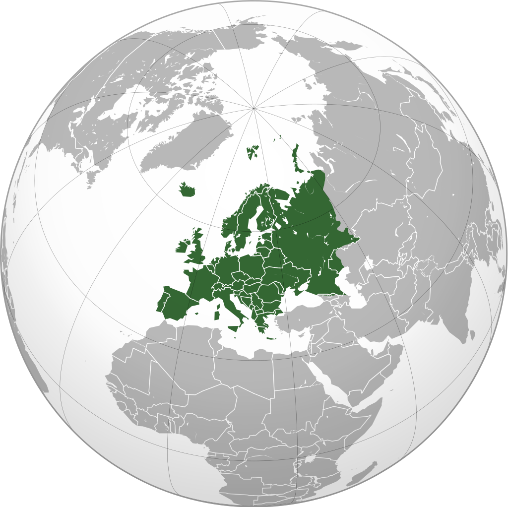

Džordž Stivenson (Vajlam 9. jun 1781 - London 26. decembar 1848), engleski inženjer i pronalazač. Rođen je u selu Vajlamu, pored Njukasla. Poticao je iz siromašne porodice. Bio je drugo od šestoro dece Roberta i Mabel Stivenson. Otac mu je bio ložač u rudniku, a majka kćer bojača tkanina. Najveću zabavu mu je pričinjavalo pravljenje mašina od ilovače i različitih mlinova od drveta. Nije imao novčanih sredstava za školovanje pa je rano počeo sam da zarađuje, radeći poljske poslove i kao čobanin. Sa 14 godina se zapošljava kao pomoćni radnik u rudniku uglja, gde je radio pored svog oca i tako napredovao do ložača.
U Kilingvortu je 1814. izumeo prvu sigurnosnu lampu za rudnike. Novčanu nagradu za taj izum uložio je u izgradnju radionice lokomtiva u Njukaslu.
Prvu parnu lokomotivu konstruisao je Ričard Trevitik 1803. godine i dao joj ime Lokomotion. Ali ta lokomotiva nije bila dovoljno dobra da se primeni u železničkom saobraćaju. Za vreme probe, zbog težine lokomotive, šine su se lomile. Stivenson je uočio da šine moraju da budu daleko jače. Stivensonova lokomotiva, kojom je sam upravljao, vukla je 27. septembra 1825. na pruzi Stokton - Darlington prvi putnički voz na svetu. Lokomotiva je vukla 12 teretnih kola i 22 kola sa putnicima. U vozu je bilo čak 450 putnika i to je bio prvi prevoz putnika železnicom. Uspehu su doprinele jače šine i lokomotiva koja je bila prilično usavršena. Godine 1823. Stivenson gradi i fabriku lokomotiva. Na takmičenju za najbolju lokomotivu na pruzi Liverpul - Mančester, pobedila je 6. oktobra 1829. njegova Rocket lokomotiva koja je postizala brzinu od 30 kilometara na čas.
Kao savetnik, Stivenson je učestvovao u izgradnji mnogih železničkih pruga u Engleskoj Engleska (engl. England) je najveća kostitutivna država Ujedninjenog Kraljevstva i obuhvata centralni i južni deo ostrva Velika Britanija. Prostire se na površini od 130.395 km2 između Škotske na severu, Velsa na zapadu, Irskog mora na severozapadu i Keltskog mora na jugozapadu. Od kontinentalnog dela Evrope‚ kom se na krjnjem jugoistoku približila na 32 km, odvojena je na istoku Severnim morem i kanalom Lamanšem. i Evropi.  Evropa šesti je kontinent po veličini i treći najnaseljeniji, sa populacijom od oko 742 do 750 miliona stanovnika, 11% upukne svetske populacije i nultim prirodnim priraštajem (11‰). Izgradio je još 14 lokomotiva do 1825. godine.